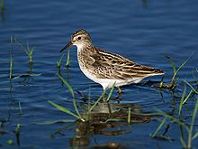
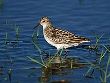

| Long-toed Stint | |
|---|---|
|  | |
| Conservation status | |
| Binomial name | |
| Calidris subminuta Middendorff, 1853 |
|
| Synonyms | |
|
Erolia subminuta |
| Long-toed Stint | |
|---|---|
|  | |
| Conservation status | |
| Binomial name | |
| Calidris subminuta Middendorff, 1853 |
|
| Synonyms | |
|
Erolia subminuta |
The Long-toed Stint, Calidris or Erolia subminuta, is a small wader bird. It breeds across northern Asia and is strongly migratory, wintering in south and south east Asia and Australasia. It occurs in western Europe only as a very rare vagrant.
Little is known of the breeding habits of this species, although it nests on the ground, and the male has a display flight.
This bird has yellowish legs and a short thin dark bill. Breeding adults are a rich brown with darker feather centres above and white underneath. They have a light line above the eye and a brown crown. In winter, Long-toed Stints are grey above. The juveniles are brightly patterned above with rufous colouration and white mantle stripes.
This bird can be difficult to distinguish from other similar tiny waders which are known collectively as "peeps" or "stints". In particular, Long-toed Stint is very similar to its North American counterpart, the Least Sandpiper. It differs from that species in its more slender, longer-necked appearance, longer toes, somewhat brighter colours, and weaker wingbar.
These birds forage on mudflats, picking up food by sight, sometimes by probing. They mainly eat small crustaceans, insects and snails.

{kind=link}